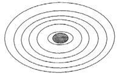

(from: Quran The Final Testament, by Rashad Khalifa, PhD.)
We learn from Verse 39:67 that God's greatness is far beyond human comprehension - the verse states that all seven universes are "folded within God's hand."
Supported by the Quran's formidable mathematical code, we are taught that our universe is the smallest and innermost of seven universes (41:12, 55:33, 67:5, & 72:8-12). Meanwhile, our scientific advances have shown us that our galaxy, the Milky Way, is 100,000 light years across, and that our universe contains a billion such galaxies and a billion trillion stars, plus countless decillions of heavenly bodies. Our universe is estimated to span distances in excess of 20,000,000,000 light years.
If we take only a quintillion [1,000,000,000,000,000,000] of the stars and simply count them [from 0 to quintillion] one count per second, day and night, this will take 32 billion years (more than the age of the universe). That is how long it will take to just "count" them; but God "created" them. Such is the greatness of God.
We can appreciate the vastness of our universe if we imagine going on a space odyssey. When we leave the planet Earth towards the sun, at the speed of light, we reach the sun after 93,000,000 miles and 8 minutes. It will take us more than 50,000 years at the speed of light to exit our galaxy. From the outer limit of the Milky Way, our planet Earth is invisible. Not even the most powerful telescope can detect our tiny "Earth."
We have to spend more than 2,000,000 years at the speed of light to reach our next-door galaxy. At least 10,000,000,000 years, at the speed of light, must be spent to reach the outer limit of our universe. From the outer limit of our universe, even the Milky Way is like a speck of dust in a large room.
The second universe surrounds our universe. The third universe is larger than the second, and so on. More accurately, our universe should be considered the seventh universe, surrounded by the sixth universe, which is surrounded by the fifth universe, and so on. Can you imagine the vastness of the first, outermost universe? No number exists to describe the circumference of the first universe. This incomprehensible vastness is "within the fist of God's hand." From the outer limit of the outermost universe, where is the planet Earth? How significant is it? On the infinitesimal mote called Earth, such minuscule creatures as Mary, Jesus, and Muhammad lived. Yet, some people set up these powerless humans as gods!
God's greatness is represented not only by the fact that He holds the seven universes in His hand, but also by the fact that He fully controls every atom, even subatomic components, everywhere in the greater universe (6:59, 10:61, & 34:3).